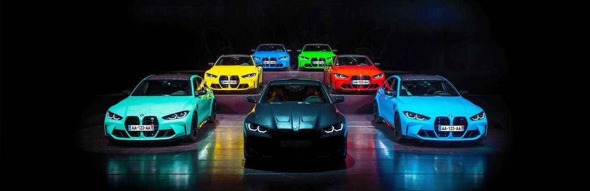

L'Excellence Allemande :
BMW incarne l'excellence automobile grâce à plus d'un siècle d'innovation et de performance. Les véhicules BMW allient puissance, design et technologie de pointe, créant une expérience de conduite inégalée. Chaque modèle reflète l'engagement continu de la marque envers l'ingénierie avancée, offrant des moteurs puissants et une esthétique captivante. L'attention aux détails se traduit par des intérieurs luxueux et un souci constant de la qualité. BMW transforme la conduite en une passion, liant le conducteur à sa machine à chaque instant. Cette recherche perpétuelle de l'excellence place BMW en tête de l'industrie automobile, attirant des passionnés du monde entier.
